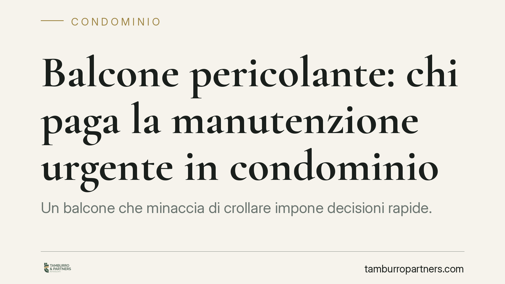

Balcone pericolante: chi paga la manutenzione urgente in condominio
Un balcone che minaccia di crollare impone decisioni rapide. L'amministratore può disporre interventi urgenti anche su parti di proprietà esclusiva, con il condominio che anticipa le somme salvo poi recuperarle dal responsabile. La ripartizione tra parti comuni ed esclusive resta però il vero nodo pratico che ogni condòmino deve conoscere.

Il caso e perché conta
Quando un balcone presenta segni di cedimento e mette a rischio l'incolumità delle persone, la logica ordinaria delle assemblee e delle maggioranze cede il passo all'urgenza. Non c'è tempo per convocare, discutere e deliberare secondo i tempi consueti.
La questione centrale è duplice: chi decide gli interventi e chi ne sopporta il costo finale. Su entrambi i punti la disciplina condominiale offre risposte precise, che conviene conoscere prima che il problema si presenti.
Inquadramento normativo
Il riferimento è l'art. 1135, ultimo comma, del Codice civile. La norma consente all'amministratore di ordinare lavori di manutenzione straordinaria che rivestano carattere urgente, salvo l'obbligo di riferirne alla prima assemblea utile.
Per "urgenza" si intende la necessità di un intervento indifferibile, tale da non poter attendere i tempi ordinari della convocazione assembleare. Il rischio di crollo di un balcone rientra pienamente in questa nozione, poiché è in gioco la sicurezza di persone e cose.
La giurisprudenza — da ultimo la Corte d'appello di Salerno — ha chiarito un punto delicato: il potere di intervento dell'amministratore può estendersi anche a parti di proprietà esclusiva quando queste incidono sulla sicurezza collettiva. Il balcone, infatti, ha una natura ibrida. La struttura portante (soletta, frontalini con funzione estetica per il decoro della facciata) può coinvolgere interessi comuni, mentre il piano di calpestio e i rivestimenti interni restano tipicamente di pertinenza esclusiva del proprietario dell'appartamento servito.
Implicazioni pratiche
Da questo quadro discende un meccanismo in due tempi. Nella fase immediata, il condominio anticipa le spese necessarie a eliminare il pericolo. È una scelta di efficienza: si mette in sicurezza subito, senza attendere l'individuazione del soggetto tenuto a pagare in via definitiva.
Nella fase successiva, si procede al recupero delle somme secondo la corretta ripartizione. Qui la distinzione tra parti comuni e parti esclusive diventa decisiva:
- se il dissesto riguarda elementi strutturali o estetici comuni, il costo si ripartisce tra i condòmini secondo i millesimi;
- se il danno interessa la porzione di proprietà esclusiva, la spesa grava sul singolo proprietario.
Nella pratica i due profili spesso convivono, e la corretta imputazione richiede una perizia tecnica che distingua le componenti dell'intervento.
Attenzione a un equivoco frequente: l'anticipo da parte del condominio non significa che il condominio paghi. Significa solo che la collettività copre il costo iniziale, riservandosi di rivalersi su chi ne è realmente responsabile. Il proprietario dell'appartamento non è esonerato: resta tenuto per la quota di sua competenza.
Il ruolo dell'amministratore
L'amministratore che riscontra il pericolo non può restare inerte. La sua responsabilità può essere chiamata in causa se, informato del rischio, omette di attivarsi. Al tempo stesso deve muoversi con misura: gli interventi devono limitarsi a quanto necessario per eliminare l'urgenza, senza trasformarsi in opere di riqualificazione che spetterebbero all'assemblea.
Documentare la situazione è essenziale. Segnalazioni, relazioni tecniche e fotografie costituiscono la prova sia dell'urgenza sia della corretta condotta.
Cosa fare in concreto
- Segnala per iscritto all'amministratore ogni segno di cedimento del balcone, conservando copia della comunicazione datata.
- Richiedi una perizia tecnica che distingua le componenti strutturali comuni da quelle di proprietà esclusiva: sarà la base per una ripartizione corretta.
- Verifica la copertura assicurativa del condominio e la tua polizza individuale, controllando le clausole relative ai danni da rovina di edificio.
- Non ostacolare l'intervento urgente disposto dall'amministratore: eventuali contestazioni sulla ripartizione vanno sollevate nella sede propria, non impedendo la messa in sicurezza.
- Consigliamo di far mettere a verbale nella prima assemblea utile le decisioni assunte in via d'urgenza, per rendere trasparente la gestione delle spese.
Un punto di attenzione finale
La manutenzione urgente non risolve la questione delle responsabilità pregresse. Se il degrado deriva da una mancata manutenzione ordinaria protratta nel tempo, l'individuazione del responsabile — e dunque di chi paga in via definitiva — può richiedere un accertamento più approfondito, anche in sede giudiziale.
---
*Contributo informativo a cura di Tamburro & Partners - Avv. Giuseppe Tamburro. Non costituisce parere legale.*
Ogni condominio ha una storia a sé.
Se gestisci un'amministrazione e vuoi un confronto su una specifica questione condominiale, scrivi allo studio. Ti rispondiamo entro un giorno lavorativo.